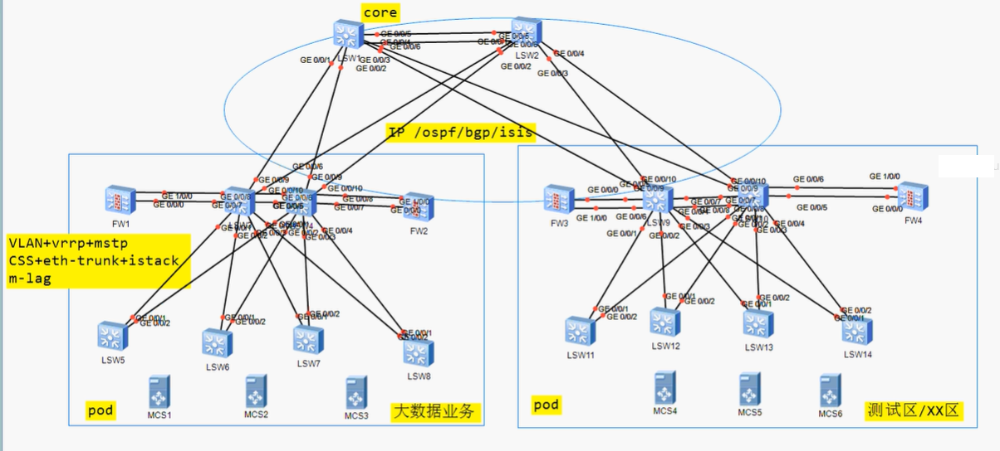
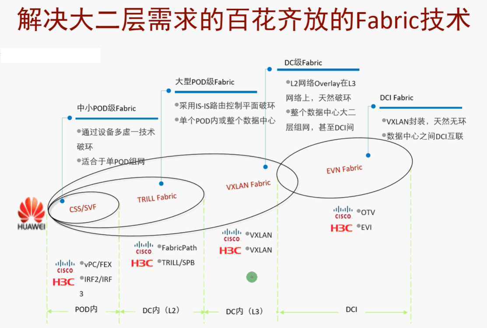
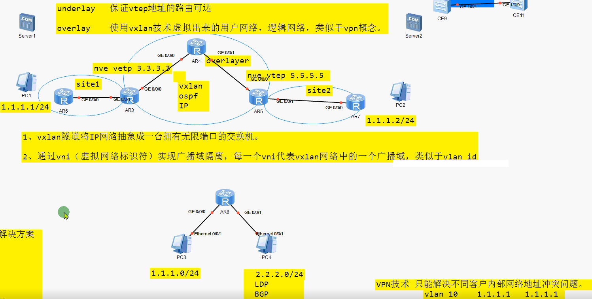
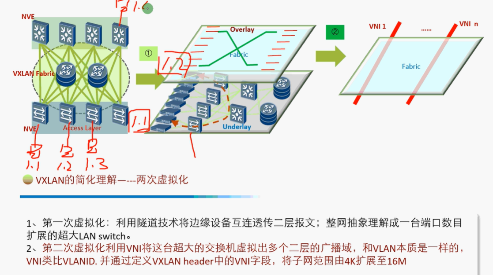
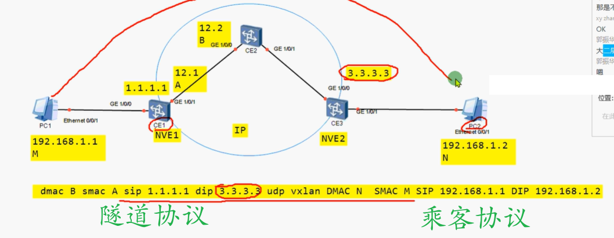
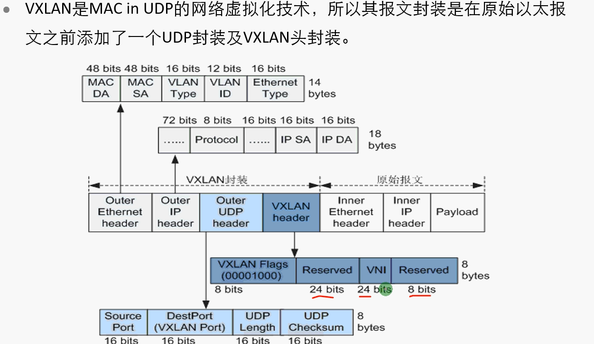

description：
VXLAN是一种网络虚拟化技术，可以改进大型云计算在部署时的扩展问题，是对VLAN的一种扩展。VXLAN是一种功能强大的工具，可以穿透三层网络对二层进行扩展。它可通过封装流量并将其扩展到第三层网关，以此来解决VMS（虚拟内存系统）的可移植性限制，使其可以访问在外部IP子网上的服务器。
vxlan初试
介绍
def
==大二层==
- 虚拟机摆脱地理位置的限制自由迁移，构建跨地理区域的大二层网络。
- 要求网络横向流量提供无阻塞的能力
- 构建跨地理区域的服务器集群，提高系统容灾能力
- 一种点到点的隧道技术，隧道本质是对报文的重新封装，利用封装后的信息进行报文的转发。
- vxlan是无控制平面的隧道技术。【有控制那个面的隧道技术：LSP（LDP/BGP)，IPsec VPN(IKEv1,IKEv2), L2TP, SSL VPN ,VPLS】
- 实际上vxlan可以利用evn，evpn协议，sdn控制器来充当它的控制平面。
- vxlan能实现2层互访（同子网互访），3层互访，也可以和传统vlan网络结合组网部署。
- 基于IP的封装，封装的对象始终是数据帧。
POD
- Point of Delivery
- 既可以是物理的，也可以说逻辑的数据中心功能模块，一个POD，可以包含机柜、服务器及网络设备、以及相应的基础设施。
==传统数据中心架构网络==

传统网络大不起来？
- STP阻塞链路，浪费带宽
- 用CSS，M-LAG，纯二层网络广播泛洪范围太长，所有设备都要维护MAC地址表，表项容量存在DC扩容的瓶颈。
云计算时代网络设计？（胖数据网 | Spnie+leaf组网）
- 纯IP网络
- 扁平化
- 无阻赛链路
- 可靠，可扩展
- 大二层
- 报文转发不超过三台设备

概念
NVE
networkl virtualization edge：
网络虚拟化边缘设备，进行vxlan封装和解封装的设备。
位于overlay网络的边界，实现二、三层的虚拟化功能。
vxlan
virtual extensible lan
- 虚拟可扩展局域网
- 通过LMAC in udp 的报文封装方式，实现基于IP overlay的虚拟局域网
- vxlan网络中的NVE以VTEP进行标识
VTEP
- vxlan tunnel endpoint
- vxlan隧道端点
- 每一个NVE至少有一个VTEP，VTEP使用NVE的IP地址表示
- 两个VTEP可以确定一条vxlan隧道

逻辑抽象

报文

vni
- 表示不同的广播域
udp port
- 通过原始帧的SMAC+DMAC hash 后的值。
- Dport 4789 代表vxlan
- 目前ensp 的sport 和dport 都是4789
添加udp封装的原因？
-

封装
vxlan？什么样的流量需要vxlan需要封装